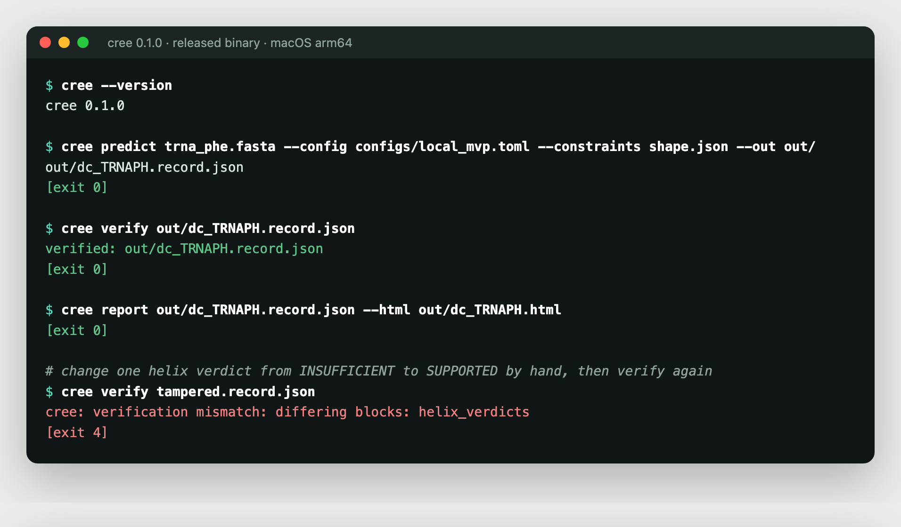
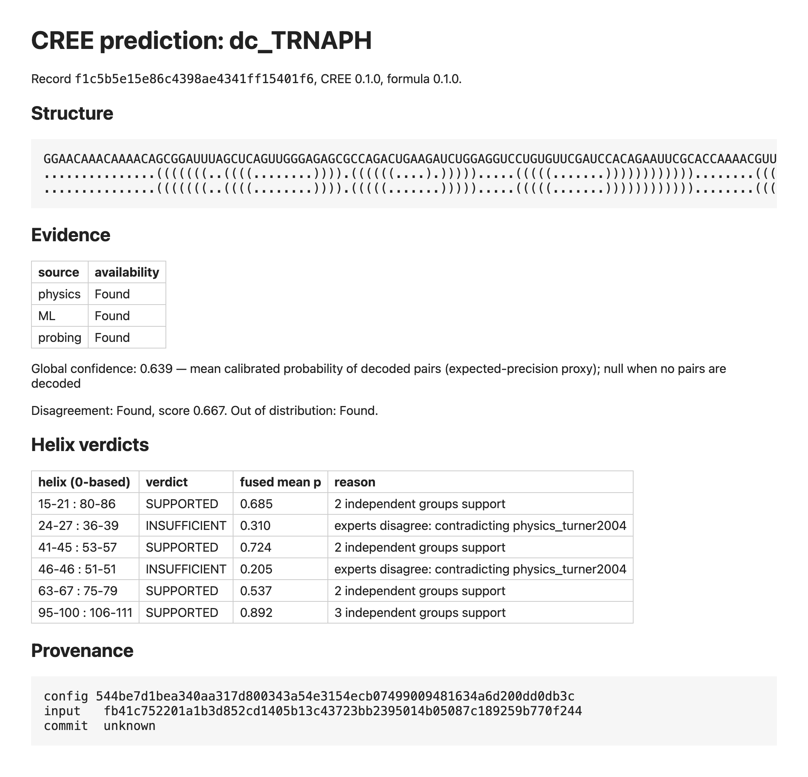
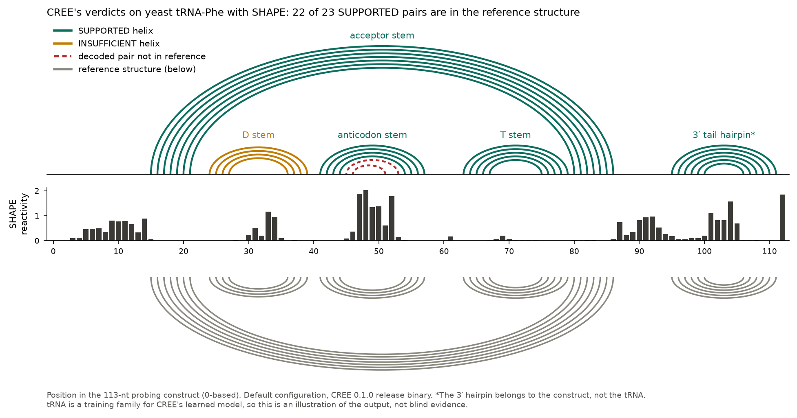
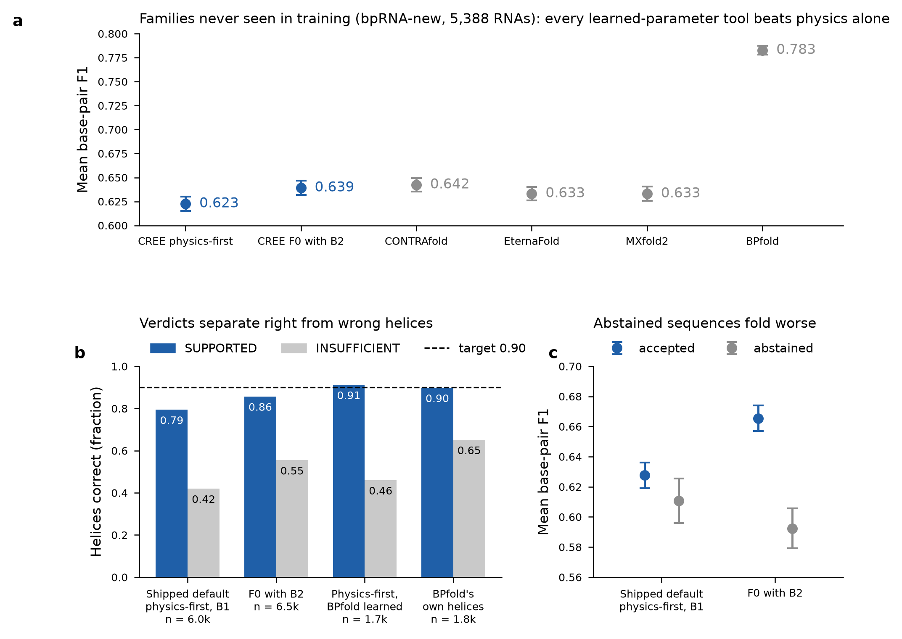
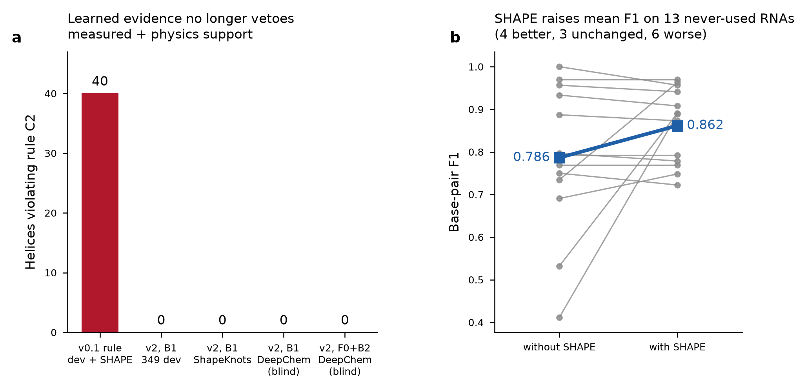
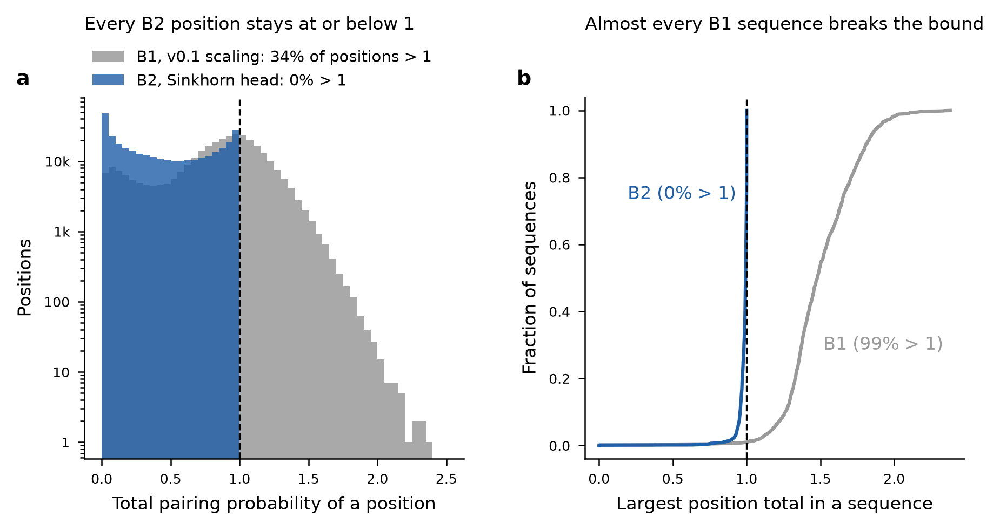

- ViennaRNA pair and unpaired probabilities
- Learned model (ResNet over the sequence)
- SHAPE reactivities as pseudo-energies
RNA structure · evidence and trustVersion 0.1.0 · October 2026Rust + Python · ViennaRNA · PyTorchCode private · showcase
An RNA structure with a verdict on every helix.
CREE (Computational RNA Evidence Engine) predicts how an RNA molecule folds, using three kinds of evidence: thermodynamics, a learned model, and chemical probing data (SHAPE) when an experiment exists. It combines them only as far as they are truly independent. Instead of one structure presented as fact, it returns calibrated probabilities, a verdict for each helix with its reasons, and a flag that says when not to trust the answer. CREE is a trust-and-fusion layer: it can wrap another folding tool and tell you which of that tool's helices to believe.
5,388RNAs from families never seen in training, used once as a blind test
91.2%of helices CREE marks SUPPORTED are correct when it wraps the BPfold folder (target ≥ 90%)
0.786 → 0.862mean F1 on 13 never-used RNAs when their SHAPE data are added
0.623 vs 0.783raw folding accuracy (F1) of CREE's default vs BPfold: CREE is not the most accurate folder
The problem
A predicted structure does not say which parts to believe
RNA molecules fold back on themselves into helices and loops, and that shape decides much of what they do: how a gene is regulated, where a drug or an antisense strand can bind, how stable a messenger RNA is. Computer programs predict these shapes, and they are often right, but a prediction usually arrives as a single structure, or as probabilities whose reliability on a new kind of RNA is unknown.
Recent reviews describe a generalisation problem: learned folding models score well on RNA families like those they were trained on, then drop on families they have never seen. A scientist looking at one prediction cannot tell which helix is solid, which is a guess, and whether the probing experiment they ran agrees.
The approach
Count evidence, not opinions; say when the evidence runs out
- Three kinds of evidence: thermodynamic physics (ViennaRNA 2.7.2), a learned model, and measured SHAPE reactivity.
- Independence first. Evidence is grouped by what it is derived from, so two models trained on the same data count once. A high probability that rests on one group alone is never called SUPPORTED.
- Roles. Measured data outrank physics, physics outranks a learned model. A learned model can add support but cannot veto a helix that measurement and physics both support.
- Calibration with a stated target. The SUPPORTED threshold is fitted per evidence combination, so that at least 90% of SUPPORTED helices should be correct, using a distribution-free statistical bound.
- Abstention. When the experts disagree, or the RNA looks unlike anything in training, CREE flags the whole prediction.
- A verifiable record. Every run writes a hash-pinned record that can be recomputed and checked; an edited record is refused.
The four verdicts a helix can receive
SUPPORTEDat least two independent groups agree and the calibrated probability clears the threshold
CONTRADICTEDmeasured data argue against the helix and no measured data support it
INSUFFICIENTthe evidence cannot decide: one group only, or experts disagree
NOT_ASSESSEDno usable evidence for this helix
How it works
Five stages between a sequence and a record you can check
Each stage is a separate, tested component. A Rust core validates input, enforces invariants and writes the record; Python workers run the physics and the learned model.
- Physics-first by default
- Dependence model groups evidence by origin
- Rejects a model whose position totals exceed 1
- Pair and unpaired probabilities mapped on held-out data
- Thresholds per evidence class, Learn-then-Test bound
- Verdict per helix with its reason
- Disagreement and out-of-distribution flags
- Abstain when warranted
- Hashes of config, input, models and worker code
cree verifyrecomputes; exit 4 on mismatch, exit 5 on code drift
Core rule: a verdict is only as strong as its independent evidence. CREE would rather say INSUFFICIENT than present one model's confidence as a fact.
What is new in this project
The parts exist separately; the combination is the contribution
Thermodynamic folding, learned folding, SHAPE-guided folding and calibration are all established. The folding tools compared here (CONTRAfold, EternaFold, MXfold2, BPfold) return a structure or pair probabilities. None of them returns a per-helix verdict backed by independent evidence and a fitted precision target. As far as I know, that combination has not been put together and tested this way before. It still needs independent review.
- Verdicts per helix, not per structureEach helix gets SUPPORTED, CONTRADICTED, INSUFFICIENT or NOT_ASSESSED, with the experts that supported or contradicted it.
- Evidence counted by independenceA dependence model groups evidence by origin (measured, thermodynamic, learned). Agreement between correlated sources is not counted twice.
- A learned model cannot veto measurementIf SHAPE data and physics both support a helix, a learned model's disagreement is recorded as dissent and does not overrule them. Before this rule there were 40 violations; afterwards, 0.
- Precision targets with a statistical boundThe SUPPORTED threshold for each evidence class is fitted by Learn-then-Test with a one-sided Clopper–Pearson bound (α = 0.10). The page reports where it fails to transfer to new families.
- A wrapper for other foldersCREE can take another tool's output as its learned evidence and judge it. Around BPfold, 89.8% of the helices CREE supports are correct, against 65.2% of the rest.
- Records that cannot be quietly editedEach record pins hashes of the config, input, models and worker code.
cree verifyrecomputes the result and refuses a record that was changed by hand. - Preregistered, failures includedHypotheses, thresholds and data splits were written and hashed before training; each test was run once; every outcome is published, including the four that failed.
- Methods reused from the author's other workThe independent-evidence floor comes from PROTEORA; split-conformal calibration and the drift gate come from UMNA.
Where it stands · version 0.1.0, frozen October 2026
Works end to end and is honest about itself; its reliability targets are not yet met on new families
Version 0.1.0 was tested against two preregistrations, each hashed before training (revision B: PREREG_v0.1b.md, SHA-256 135b8407…09ecb). Development data: ArchiveII split by Rfam clan, so each test family is absent from training, plus 203 RNA chains from the Protein Data Bank. Blind data: 5,388 bpRNA-new RNAs with no Rfam match to any training clan (largest 5-mer similarity 0.355), and 13 DeepChemProfiling SHAPE RNAs, never used before.
What is good
- Verdicts separate right from wrong. On blind RNAs, SUPPORTED helices are 79–91% correct depending on configuration; INSUFFICIENT helices 42–65%.
- It makes another folder safer. Wrapped around BPfold, 91.2% of SUPPORTED helices are correct (n = 1,691; target 90%: pass).
- Abstention works on blind data. Flagged RNAs fold worse than accepted ones: F1 −0.017 [−0.034, −0.000] in the default; −0.073 [−0.089, −0.057] with learned fusion.
- SHAPE helps. On 13 never-used RNAs, mean F1 rises from 0.786 to 0.862 (default) and from 0.763 to 0.904 (learned fusion). Helices SUPPORTED with SHAPE are 95–97% correct.
- Two design flaws fixed and proven fixed (C2 veto, D-1 probability totals; figures below).
- Reproducible. The release binary reproduces 279 of 279 evaluated runs; 26 Rust and 83 Python tests; all 95 requirements traced to tests; 0 known dependency vulnerabilities.
What is not good
- Not the most accurate folder. On blind RNAs: CREE default 0.623, CREE with learned fusion 0.639, CONTRAfold 0.642, EternaFold and MXfold2 0.633, BPfold 0.783.
- Precision target missed on new families. The default's SUPPORTED helices are 79.4% correct (target 90%), and unpaired calibration error is 0.070 (target 0.05). Thresholds fitted on known families are optimistic for new ones.
- The better learned model was not promoted. B2 beat B1 in every group (+0.259 F1), but the preregistered gate needed more sequences per group than the data contain, so the rule kept B1.
- Learned fusion is not reliably better than physics. It wins on blind families (+0.017 [+0.011, +0.022]) but not on the development clans (−0.018 [−0.080, +0.032]), so the default stays physics-first.
- SHAPE is not uniformly helpful: of the 13 RNAs, 4 improved, 3 were unchanged and 6 got slightly worse; the mean rises because of two large gains.
What will improve
- Refit the thresholds for new families so the 90% target holds where it currently does not.
- Fuse BPfold inside CREE, not only wrap it, and test on a fresh blind set.
- Train a larger learned model on the Apple GPU (about 9× faster than CPU), under a new preregistration.
- Size the promotion gate from a pilot so that a better model can actually be promoted.
- Add comparative evidence (covariation in Rfam alignments) as an independent group, and DMS probing data.
- Independent review of code and analyses, and a second-machine reproduction.
| Preregistered hypothesis (revision B) | Data | Result | Status |
|---|---|---|---|
| H-B1 · The new learned model's position totals never exceed 1 | development + blind | largest total 0.999999 (old model: up to 2.60) | PASS |
| H-B2 · No learned veto of measured + physics support (rule C2) | 349 dev, 20 + 13 SHAPE RNAs | 0 violations in every configuration (old rule: 40) | PASS |
| H-B3 · Promote B2 only if it passes the per-group gate | 8 clan groups + PDB | better in every group, but 3 groups too small for the power rule | FAIL · gate |
| H-B4a · SUPPORTED precision ≥ 0.90 (default) | 5,388 blind | 0.794 (n = 6,037) | FAIL |
| H-B4b · Unpaired calibration error ≤ 0.05 | 5,388 blind | 0.070 | FAIL |
| H-B4c · Abstained RNAs fold worse than accepted ones | 5,388 blind | −0.017 F1 [−0.034, −0.000] | PASS |
| H-B5 · Around BPfold, SUPPORTED precision ≥ 0.90 | 5,388 blind | 0.912 (n = 1,691) | PASS |
| H-B6 · Learned fusion beats physics | blind / development | +0.017 blind; −0.018 dev (CI below −0.02) | PASS blind · default unchanged |
Results · screenshots and figures from the recorded runs
What a reader can check without the code
Everything below comes from the frozen v0.1.0 release and its evaluation runs. The terminal and report are from the released binary running on one RNA; the figures are from the preregistered analyses. Click an image to open it at full size.


cree verify recomputes it and refuses the record (exit 4). The [exit N] lines and the comment line were added by the shell script that captured the session.

cree report.







An exploratory result, clearly labelled as one
On the 13 blind SHAPE RNAs, CREE with learned fusion and SHAPE data reached F1 0.904; BPfold, which cannot use probing data, reached 0.756. CREE was ahead on 12 of 13 RNAs (+0.148 [0.073, 0.257]). This comparison was not preregistered, the sample is small, and two of the RNAs resemble earlier datasets. It suggests that measured data are where CREE's design pays off, and it is a hypothesis for version 0.2.0, not a claim.
Boundaries
What CREE is not
- Not the most accurate folder. BPfold folds better. CREE's job is to say which helices to trust, including another folder's.
- Not a breakthrough claim. It is a trust-and-fusion layer with measured strengths and published failures. It is not yet a proven missing piece of RNA science.
- Not a medical device or a clinical tool. It makes no diagnosis, interprets no patient variant, and uses no patient data.
- Not a 3D or pseudoknot predictor. It predicts nested secondary structure; pseudoknots are evaluated but not targeted.
- Not validated on long or in-cell RNAs. Messenger RNAs, whole genomes and structures inside living cells are outside what was tested.
- Not a foundation model. Its learned models are small and trained on public structure data.
- Not open source yet, and not peer-reviewed. The code is private; the licence has not been chosen.
Data and tools used
Public sources
- ViennaRNA Package 2.0 — Lorenz et al., Algorithms for Molecular Biology 2011.
- ArchiveII and family-fold splits — Sloma & Mathews, RNA 2016; family-fold splits from Szikszai et al. 2022.
- bpRNA — Danaee et al., Nucleic Acids Research 2018; bpRNA-new lists from the MXfold2 data release (Sato et al., Nature Communications 2021; Zenodo 4430150, CC-BY-4.0).
- EternaBench chemical-mapping data — Wayment-Steele et al., Nature Methods 2022.
- Rfam 15.1 covariance models and clans — used to prove that blind families are absent from training.
- SHAPE pseudo-energies — Deigan et al., PNAS 2009.
- Learn-then-Test risk control — Angelopoulos et al., 2021 (arXiv:2110.01052).
- Comparators: CONTRAfold 2, EternaFold, MXfold2 0.1.1, BPfold 0.3.1, each run with its released weights.
What version 0.2.0 will be · planned, not built
From a trustworthy structure to questions scientists and clinicians actually ask
Version 0.2.0 has two parts. First, make the reliability targets hold on new families. Then add a medical-science layer that answers specific research questions with the same verdict-and-evidence discipline. Prototype modules for the second part exist but have not been evaluated, and none of this is claimed until it is tested under a new preregistration on fresh blind data.
- v0.1.0 · trust layer
- Fusion, calibration, helix verdicts, abstention, verifiable records
- Preregistered blind test, failures published
- Done, October 2026
- Hold the 90% target on new families
- Refit thresholds on a family-held-out scheme
- Gate sample size set from a pilot run
- Fresh blind set: new Rfam families, new SHAPE and DMS data
- Stronger evidence
- BPfold fused inside CREE as a learned expert
- A larger model trained on the Apple GPU
- Comparative covariation from Rfam alignments as an independent group
- Medical-science questions
cree variant: does a sequence variant change the RNA's structure, ranked against every other possible substitution?cree access: how likely is a target site to be open for an antisense or siRNA strand?- Probing recommender: where would one experiment best settle an undecided verdict?
The planned first demonstration
The iron-responsive element (IRE) in the 5′ untranslated region of the ferritin light-chain gene FTL (transcript NM_000146.4) is a small, well-studied RNA hairpin. Mutations in it cause hereditary hyperferritinaemia–cataract syndrome (Beaumont et al., Nature Genetics 1995). It is a natural test of whether CREE can say, with stated evidence, which variants disrupt the structure and which do not. The output would be a research annotation, never a clinical interpretation.
If it succeeds · stated conditionally because it is conditional
What a trustworthy RNA structure could contribute
None of the following is demonstrated yet. Each depends on version 0.2.0 meeting its targets on fresh blind data and then on independent validation by others. They describe why the problem is worth solving, not what CREE already does.
To medical science
- RNA medicines. Antisense oligonucleotides and siRNAs must bind a part of the target RNA that is open. A calibrated opening probability with stated evidence could narrow which sites are worth testing in the lab.
- Variants that change shape. Some disease-linked variants act by refolding an RNA (so-called riboSNitches; Halvorsen et al., PLoS Genetics 2010). CREE could separate supported structural effects from model guesses, as research evidence for experts.
- Later, mRNA design. Structure affects how stable a messenger RNA is and how well it is translated. Long mRNAs are outside v0.2.0's tested range.
To science
- Fewer wasted experiments. Knowing which helices are undecided tells a lab where one probing experiment would settle most of the doubt.
- An audit layer for any folder. As folding models multiply, a separate layer that judges any model's helices against independent evidence lets results be compared and trusted.
- Honest benchmarks. Preregistration, blind families and published failures give the field one more example of testing generalisation rather than memorisation.
To human development
- Computation that admits doubt. As AI tools enter biology and medicine, software that says "the evidence cannot decide" and shows why is safer than software that is always confident.
- Results anyone can check. Hash-pinned records that refuse tampering make computational claims auditable by people who did not run them.
- Access. CREE runs on a laptop with public data, so a small lab or a student anywhere could use it, if it proves reliable.
Research disclaimer
Read this before using anything on this page
- Research software, version 0.1.0. CREE is an unvalidated research prototype. It is not a medical device, has not been reviewed by any regulator, and must not be used for diagnosis, treatment, variant interpretation for a patient, or any clinical decision.
- Not peer-reviewed. All results are the author's own, from preregistered analyses on public data. They have not been independently reproduced or published in a journal.
- Results are bounded by their data. Numbers apply to the datasets named on this page: short to medium-length RNAs with known secondary structures, in vitro probing data. They may not hold for other RNAs, longer molecules or in-cell structures.
- Failures are part of the record. Four preregistered tests failed and are reported as failures. No threshold was changed after seeing blind results.
- How it was built. The code and analyses were produced with an AI coding assistant under the author's direction and an honest-provenance policy. The author's line-by-line review is in progress.
- Code is private. Screenshots and figures here are from the recorded runs; the source code, models and full records are not published. Reviewers can ask for a guided review.
- Future capabilities are plans. Everything under version 0.2.0 and "If it succeeds" is a goal, not a result.
What I am looking for
Most useful right now: people who will try to break it
Find a helix CREE marks SUPPORTED that is wrong, a leak between training and blind data, or a statistical step that does not hold. A careful negative review is worth more to this project than praise.
RNA structural biologists and chemical-probing experimentalists (SHAPE, DMS); statisticians working on conformal prediction and risk control; researchers in RNA therapeutics who can say which questions matter.
Fresh blind probing datasets, a jointly written preregistration for version 0.2.0, independent reproduction on another machine, and academic supervision or co-authorship for a publication.
To get in touch, or to request a guided review of the code and records, please contact me through github.com/nabvian.